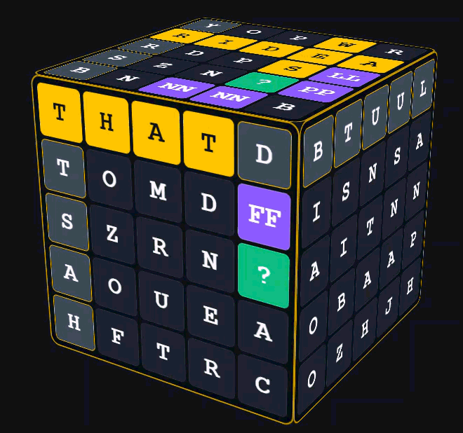
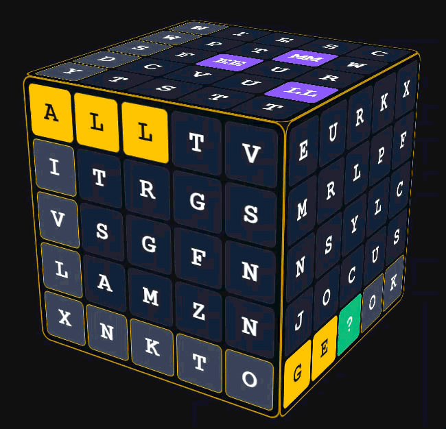
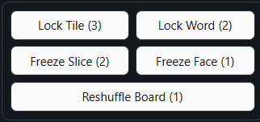

View Live GitHub Demo: WordBlocks: Twist
Context: Inspired by the Rubik's Cube and a curiousity to go beyond a 2D plane, 'WordBlocks: Twist' is an upgraded 3D evolution of the original WordBlocks game. The project challenges players to navigate a three-dimensional puzzle space by selecting horizontal or vertical slices and twisting them across the cube's axes to form words on any face. To support full board exploration, the game features a rotation mechanic enabled by custom CSS matrix calculations. Gameplay is further expanded by multi-face cross multipliers— which reward overlapping words spanning across different cube faces with 2x combo bonuses— and an advanced power-up suite featuring tile locking, slice freezing, and board reshuffling to help manage complex boards like an 8x8x8 cube.
Goal: To explore gameplay mechanics in a 3D space and create a unique, enhanced WordBlocks experience using custom 3D matrix math.
Process & Iterations:
Because adapting WordBlocks into a 3D board required complex spatial maths, AI assistants, such as Gemini and Claude, were utilized to prototype and test complex 3D math matrices, in order to focus on manually improving the core gameplay loops, manage 3D state tracking, and fine-tune responsive UI interactions.

Step 1
Adapted established WordBlocks Game design and concept, and built a 3D puzzle board inspired by Rubik's Cube mechanics. Then, programmed custom interactions, enabling players to select and twist horizontal or vertical slices across the cube's axes to form words on any face.

Step 2
Programmed a rotation mechanic using CSS matrix math, allowing for smooth navigation and full-board visibility around the entire 3D structure.

Step 3
Implemented complex state-tracking rules to look over overlapping words spanning across different cube faces for 2x combo multipliers. Then, developed tactical power-ups– including tile locking, slice freezing, and board reshuffling– to support more complex board sizes, like an 8x8x8 cube.
The Challenges:
- Adapting 2D Logic into a 3D Spatial Board: Evolving the game mechanics of a flat 6x6 grid into a 3D puzzle, that requires the handling of multi-face word parsing and spatial orientation.
- Complex 3D Matrix & Rotation Math: Calculating and managing spatial transformations to ensure smooth slice-twisting and rotation mechanics across all axes without breaking game state.
- Managing High-Density Scalability: Balancing performance and user readability when scaling the board to more complex, high-density configurations like an 8x8x8 cube.
Key Features & Highlights:
- 3D Slice-Twisting Mechanic: Programmed a slice-twisting mechanic, inspired by the movements of the Rubik's Cube, that allows players to select and twist horizontal and vertical slices across the cube's axes to form words on any face.
- Dynamic View Rotation: Implemented, via custom CSS matrix math, a rotation mechanic that allows for smooth, full 360-degree navigation around the entire board.
- Multi-Face Cross Multipliers: Developed a state-tracking algorithm that detects and scores overlapping horizontal and vertical words spanning across different cube faces with 2x combo multipliers.
- Advanced Strategic Power-Ups: Created a set of new gameplay power-ups– including Tile Locking, Slice Freezing, and Board Reshuffling– to help players with harder boards.